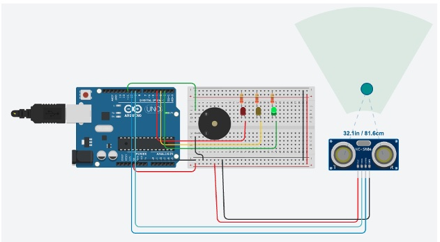

Course: TECH 117 (Computer Engineering Technology, Fall 2025)
Instructor: Ph.D. Ana Rodrigues
Team Members:
This project uses an Arduino Uno, a MQ sensor/CO2 sensor, a passive buzzer, a DHT11 Humidity sensor and 4 LEDs, to provide information and warnings about CO2, smoke and flammable gas.
The ultrasonic sensor measures distance; the Arduino activates LEDs and the buzzer according to distance thresholds.

| Item | Qty | Unit Price | Subtotal | Source |
|---|---|---|---|---|
| Arduino Uno Rev3 | 1 | $27.60 | $27.60 | Arduino Store |
| HC-SR04 Ultrasonic Sensor | 1 | $3.95 | $3.95 | Adafruit |
| Passive Buzzer | 1 | $0.95 | $0.95 | SparkFun |
| LEDs (Red, Yellow, Green) | 3 | $0.20 | $0.60 | Adafruit |
| 220 Ω Resistors | 3 | $0.03 | $0.09 | Adafruit |
| Breadboard | 1 | $4.95 | $4.95 | Adafruit |
| Jumper Wires | 1 set | $3.50 | $3.50 | SparkFun |
| Estimated Total | $41.64 | — | ||
The following image shows the assembled prototype on a breadboard.

The following Arduino code controls the system, lighting LEDs and activating the buzzer based on distance readings from the HC-SR04 sensor.
TODO
The system effectively demonstrates distance-based alerting using Arduino. It’s affordable, educational, and sustainable through reusable components.